9/2(수) · 기준 2026-09-01 22:00 ~ 2026-09-02 06:00
엑셀 다운로드
"이미지 다운로드"를 누르거나, 이미지를 길게 눌러 저장한 뒤 카톡으로 보내세요.
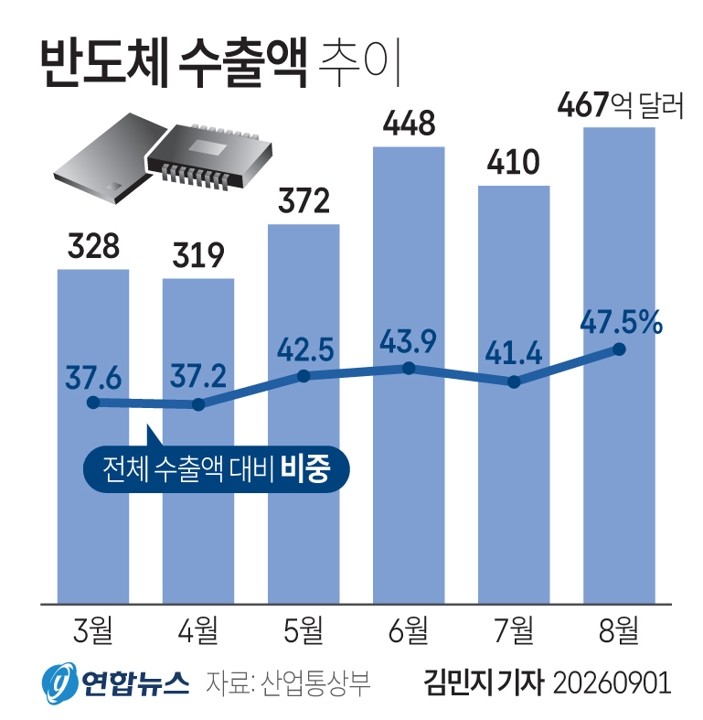
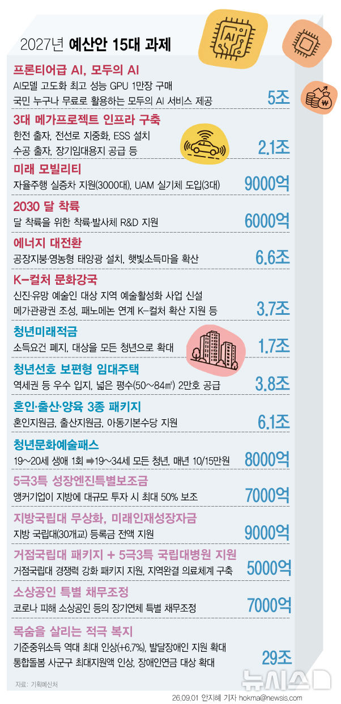
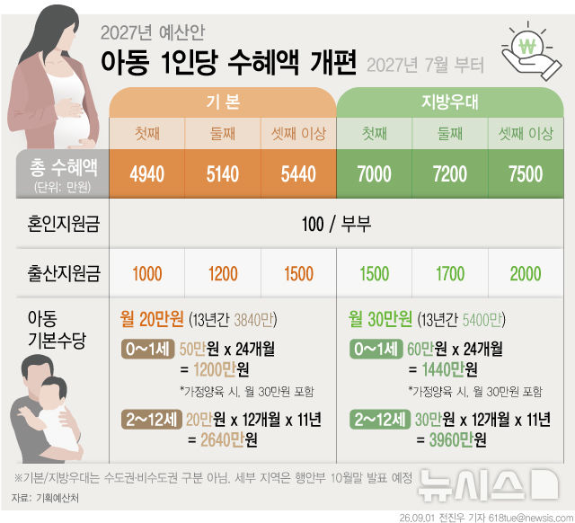
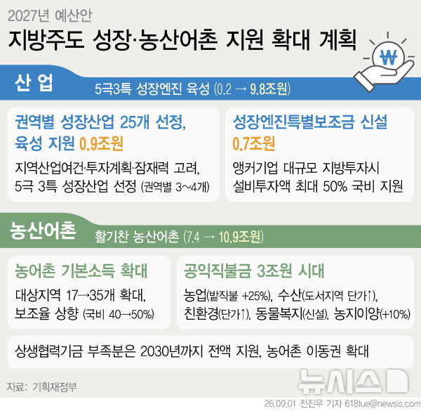
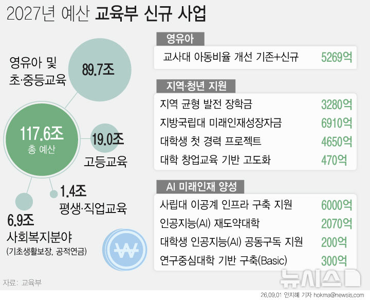
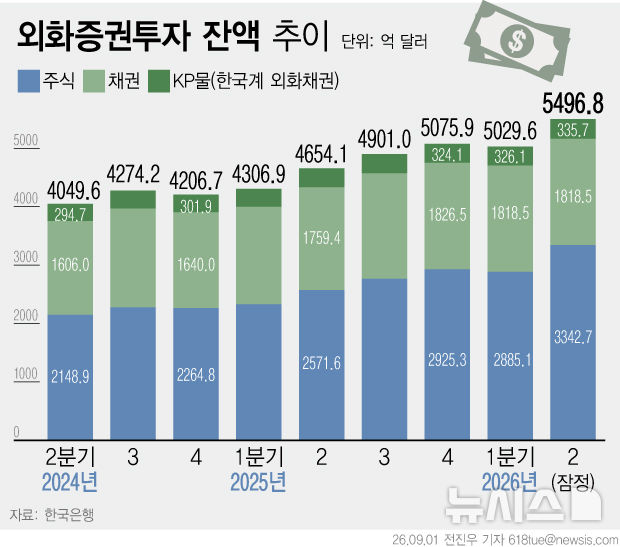
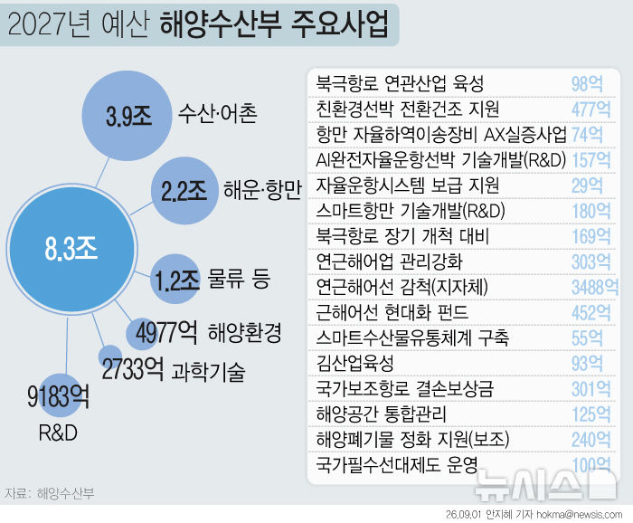
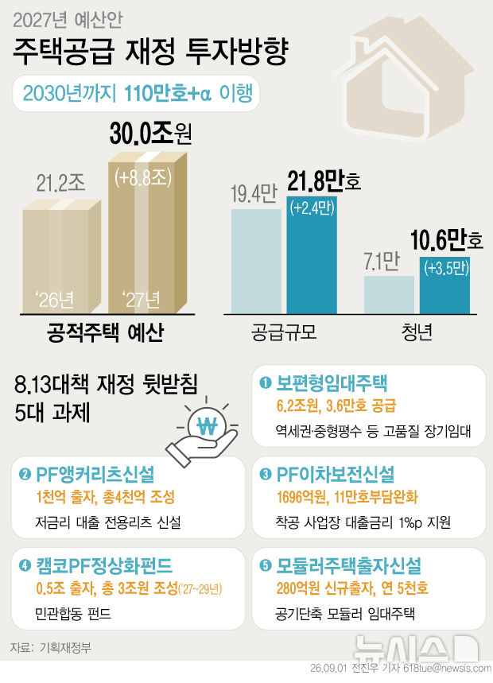
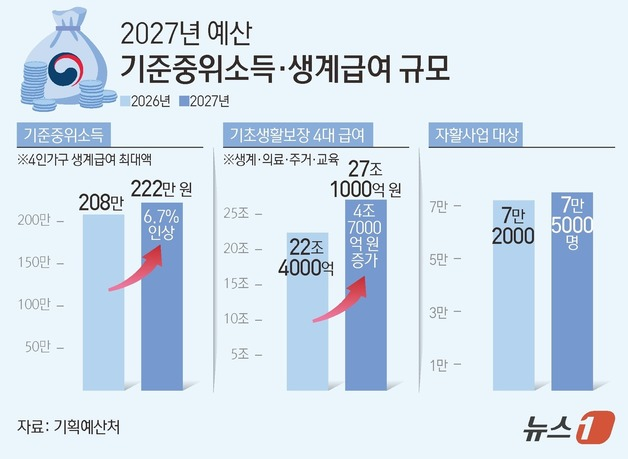
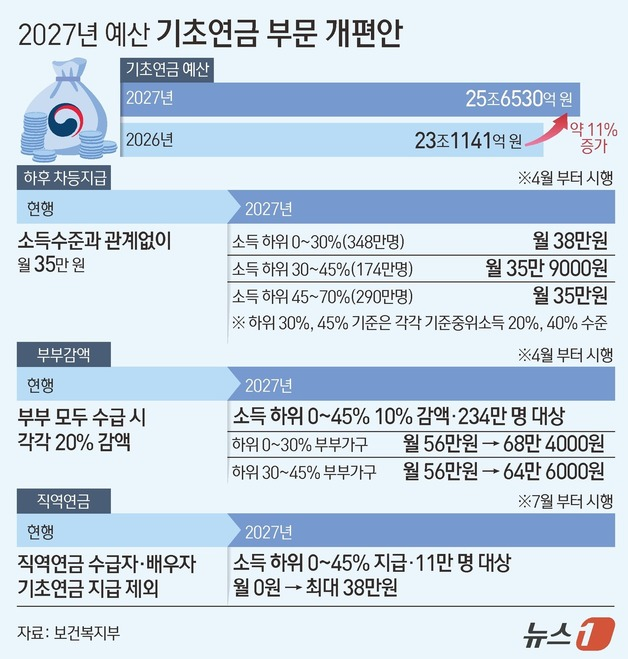
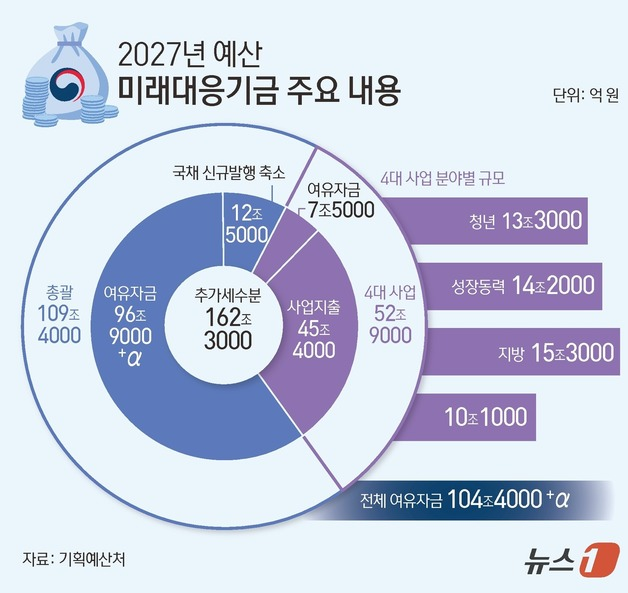
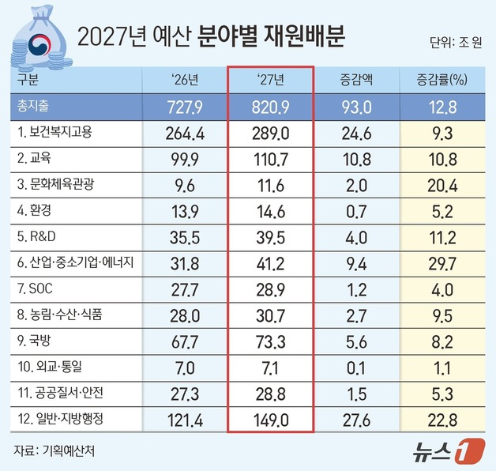

![[연합뉴스] 경찰 고위직 인사, 18개 시·도경찰청장](images/graphics/연합뉴스_01.jpg)
![[연합뉴스] 실업급여(구직급여) 지급 방식 제도 개선](images/graphics/연합뉴스_02.jpg)
![[연합뉴스] '서울대 10개 만들기' 거점국립대 3곳 선정](images/graphics/연합뉴스_03.jpg)
![[연합뉴스] 국방예산 추이](images/graphics/연합뉴스_04.jpg)
![[연합뉴스] 국민의료비 추이](images/graphics/연합뉴스_05.jpg)
![[뉴시스] 온누리상품권 10% 할인…숙박쿠폰 8만장·KTX 할인[추석 민생대책]](images/graphics/뉴시스_07.jpg)
![[뉴스1] [오늘의 그래픽] 이번 주말 서울불꽃축제…교통통제 구역 확인하세요](images/graphics/뉴스1_15.jpg)
![[뉴스1] [오늘의 증시] 9월 1일 코스피 코스닥](images/graphics/뉴스1_16.jpg)
![[뉴스1] [그래픽] 2027년 정부 예산안 5대 중점투자](images/graphics/뉴스1_17.jpg)
![[뉴스1] [그래픽] 2027년 보건복지부 예산안](images/graphics/뉴스1_18.jpg)
![[뉴스1] [그래픽] 2027년 고용노동부 주요 신규 및 증액 사업](images/graphics/뉴스1_19.jpg)
![[뉴스1] [그래픽] 2027년 고용노동부 예산안](images/graphics/뉴스1_20.jpg)


![[단독] 공정위, CJ·대상·샘표 등 5개사 현장조사...‘장류 담합’ 정조준](images/article_06.png)
![[속보] ‘펄펄’ 끓는 비판 여론에 …‘비거주 1주택 종부세 공제’ 12억 유지](images/article_07.png)


![[속보] 8월 수출 역대 3위…반도체 466억 달러 사상 최대](images/article_10.png)


{kind=link}
{kind=link}
{kind=link}
{kind=link}
{kind=link}
{kind=link}
{kind=link}
{kind=link}
{kind=link}
{kind=link}
{kind=link}
{kind=link}